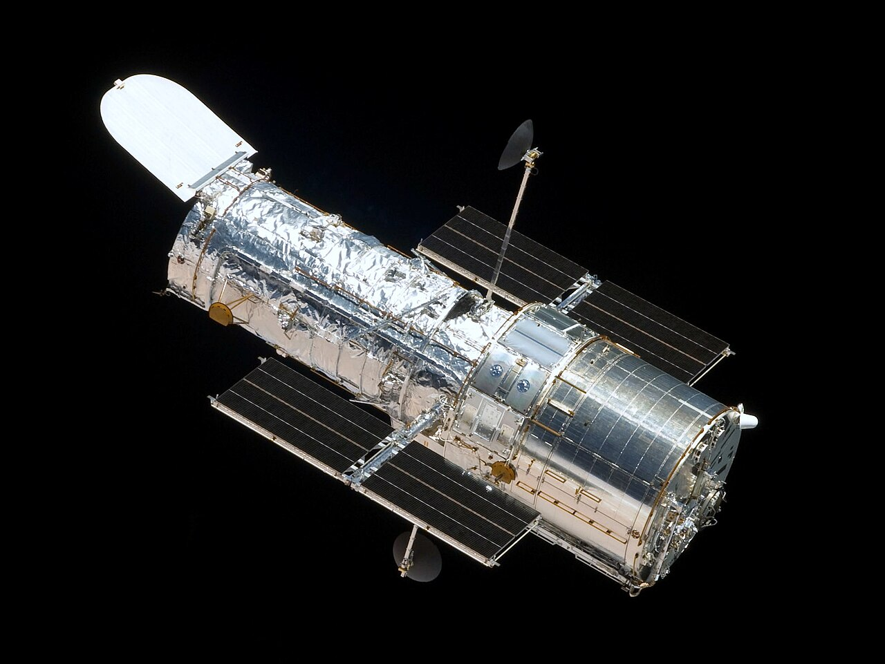
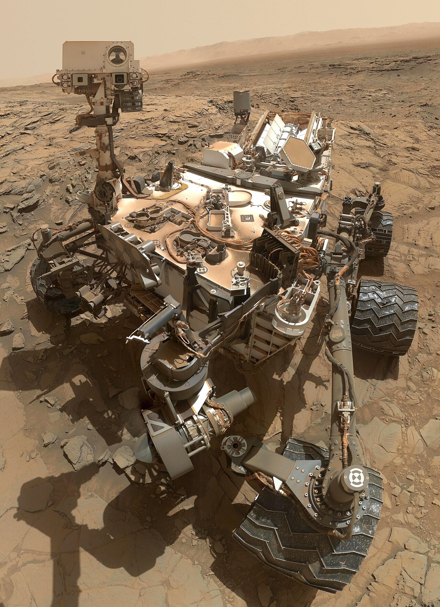
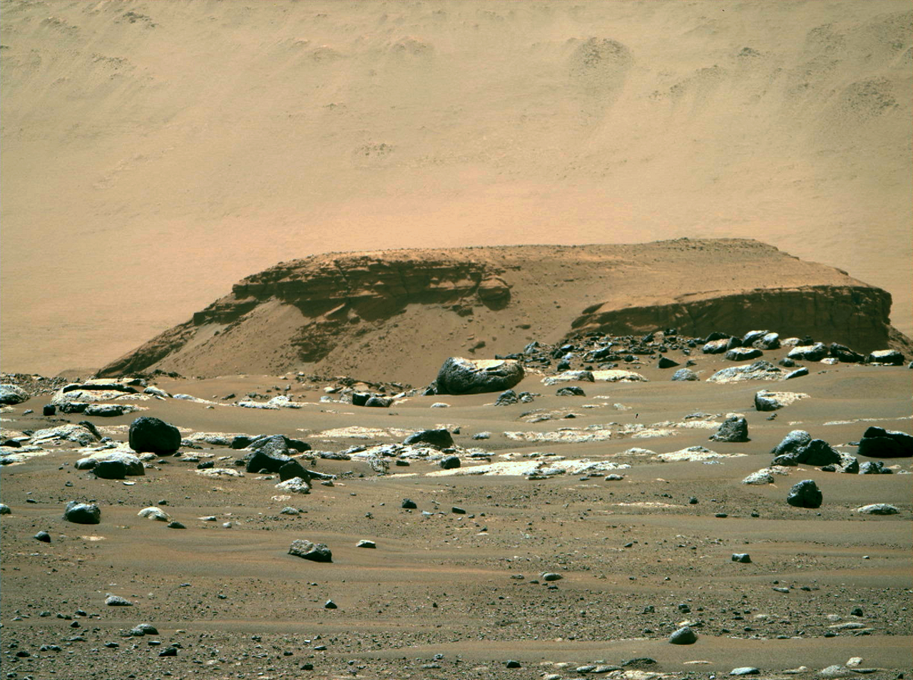
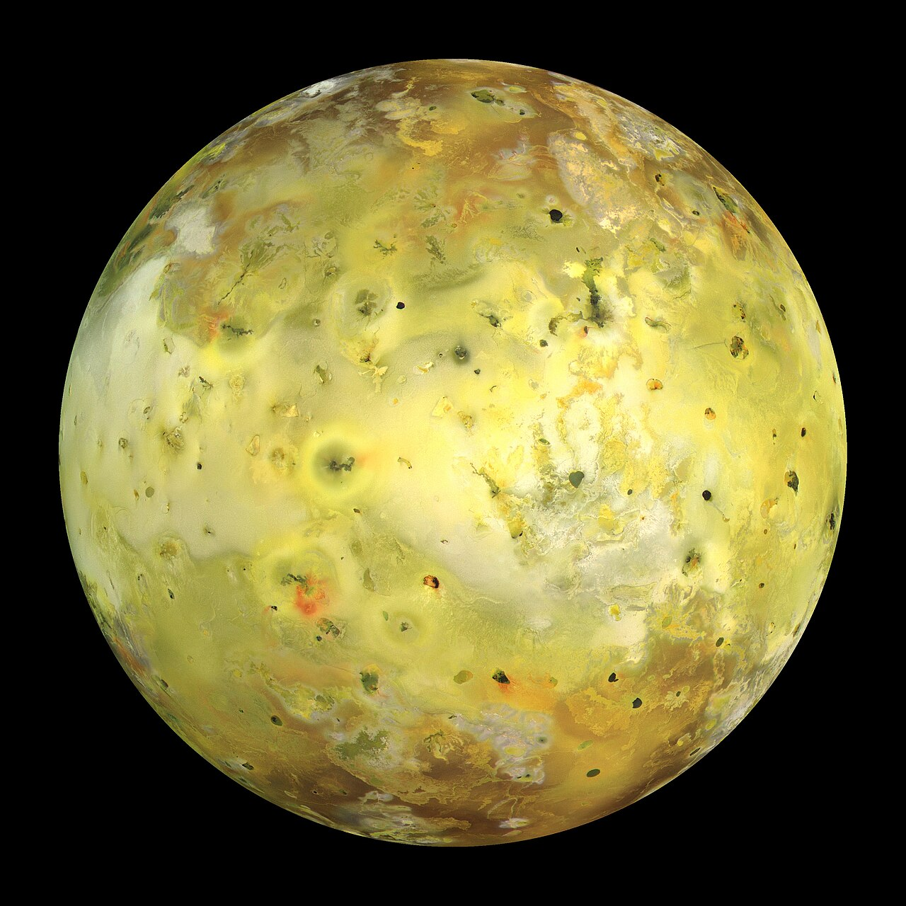
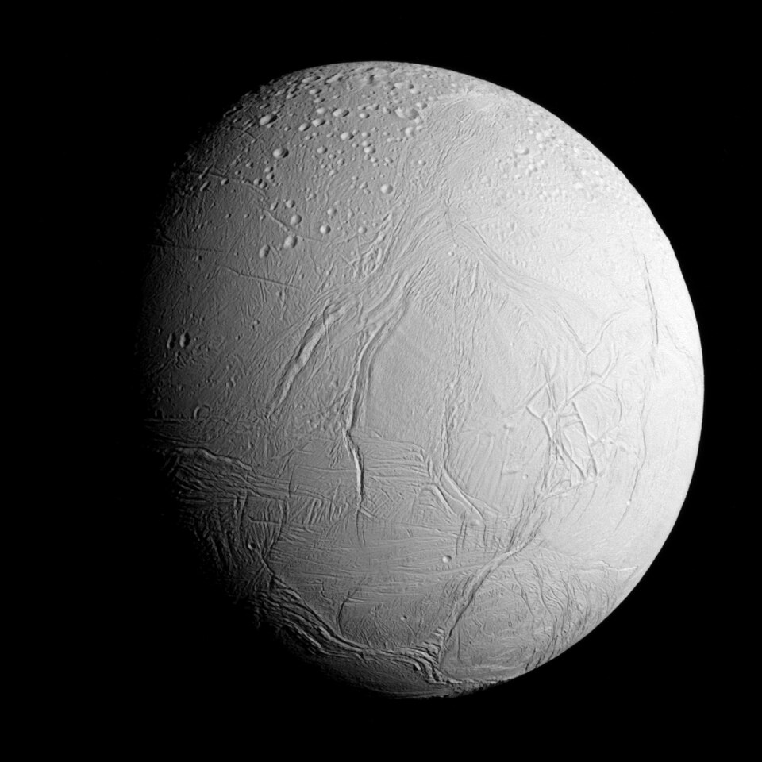
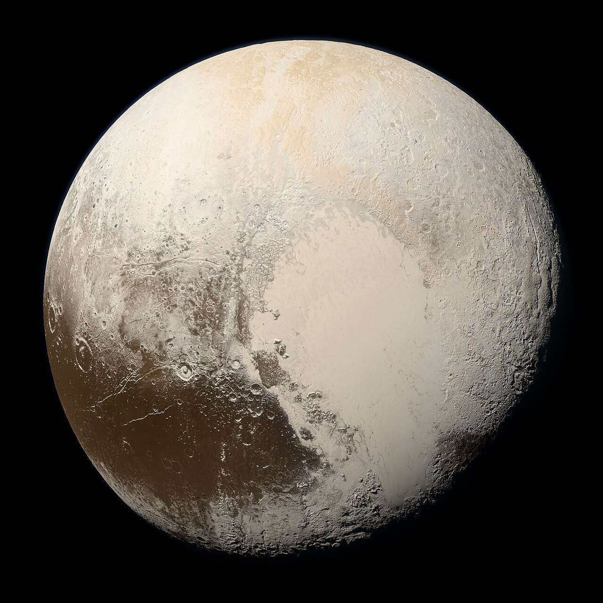
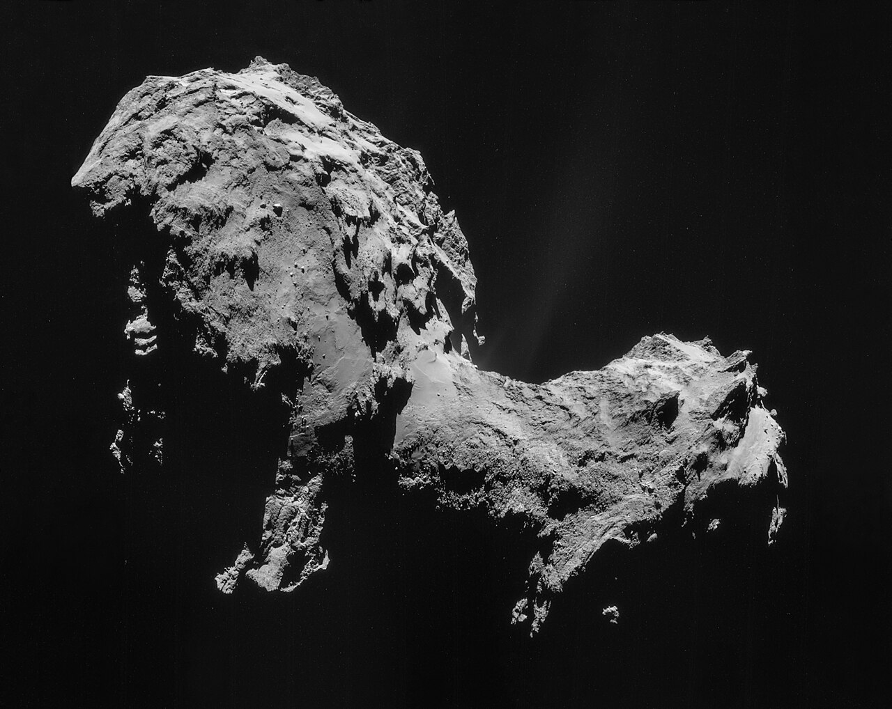

망원경은 왜 우주로 올라갔을까?
교과서 p. 10학습 목표
- 태양계 탐사선의 활동을 통해 알아낸 성과를 설명할 수 있다.
- 인공위성을 활용한 우주 탐사의 필요성을 토론할 수 있다.


그런데도 왜 수조 원을 들여 망원경을 우주로 보낼까?
예상 답: 대기가 별빛을 흔들고(시상), 자외선·X선·적외선 일부를 흡수하기 때문. '시뮬레이션 1'로 바로 연결합니다. 교과서 운영안은 4차시(망원경·탐사선 1 / 탐구 1~2 / 우리나라 우주 개발 1)이며, 데이터 탐구는 탐구 차시를 대체하거나 과제로 쓸 수 있습니다.
지상 망원경과 우주 망원경
교과서 p. 10(1) 대기가 만드는 관측의 한계
- 지상 망원경: 주로 가시광선과 전파 영역으로 관측한다. 구경을 크게 만들기 쉽고, 유지·보수가 편리하다.
- 지구 대기는 감마선·X선·자외선과 적외선 대부분을 흡수하고, 대기의 흔들림(난류)은 별빛을 번지게 한다(시상).
- 우주 망원경: 대기의 영향을 받지 않아 모든 파장에서 선명한 영상을 얻을 수 있다. 대신 크기에 제약이 있고 발사·수리 비용이 매우 크다.
| 구분 | 지상 망원경 | 우주 망원경 |
|---|---|---|
| 관측 파장 | 가시광선, 전파, 일부 적외선 | 감마선 ~ 전파 전 영역 |
| 장점 | 대형화 쉬움, 유지·보수 쉬움, 비용 낮음 | 대기 흡수·시상 없음, 날씨·낮밤 무관 |
| 단점 | 대기 흡수·산란·시상, 광공해, 날씨 | 크기 제한, 수리 어려움, 높은 비용 |
| 예 | 거대 마젤란 망원경(GMT, 25.4 m 효과), 알마(ALMA) | 허블, 제임스 웹, 찬드라(X선), 스피처(적외선) |
태양계 탐사선의 탐사 방법
교과서 p. 11(1) 탐사 방법에 따른 분류
- 지구에서 가까운 금성·화성에는 탐사 초기부터 탐사선을 보냈고, 1970년대부터 목성형 행성으로 범위를 넓혔다. 최근에는 소행성·혜성에서 시료를 가져오기도 한다.
| 방법 | 방식 | 장점 / 한계 | 예 |
|---|---|---|---|
| 근접 통과 | 천체 옆을 지나가며 촬영 | 여러 천체를 차례로 탐사 / 짧은 관측 | 보이저, 뉴허라이즌스 |
| 궤도 선회 | 천체 주위를 공전하며 관측 | 넓은 영역을 장기간 관측 | 주노, 카시니, 다누리 |
| 탐사정 낙하 | 대기 속으로 장비를 떨어뜨림 | 대기를 직접 측정 / 짧은 수명 | 갈릴레오 탐사정, 하위헌스 |
| 착륙·탐사차 | 표면에 내려 직접 분석·이동 | 표면 물질을 자세히 조사 / 단단한 표면 필요 | 큐리오시티, 퍼서비어런스 |
| 충돌 | 표면에 부딪히게 함 | 내부 물질 노출, 궤도 변경 실험 | 딥 임팩트, DART |
| 시료 회수 | 시료를 채취해 지구로 귀환 | 지상 실험실에서 정밀 분석 | 하야부사2, 오시리스-렉스 |


(2) 탐사선은 어떤 길로 갈까? · 호만 전이 궤도
- 탐사선은 행성까지 직선으로 날아가지 않는다. 연료를 가장 적게 쓰는 길은 지구 궤도와 목표 행성 궤도에 동시에 접하는 타원 궤도(호만 전이 궤도)이다.
- 탐사선이 도착할 때 행성이 그 자리에 와 있어야 하므로, 지구와 행성의 위치 관계가 맞을 때만 발사할 수 있다(발사 기회). 화성은 약 26개월마다 기회가 온다.
- 멀리 있는 탐사선과의 통신에는 시간이 걸린다. 화성까지 전파가 가는 데 최대 약 22분이 걸려, 탐사차는 스스로 판단하는 자율 주행 기능을 갖춘다.
태양계 탐사선의 활동 성과
교과서 p. 13탐사가 바꾼 태양계의 모습




| 대상 | 주요 탐사선 | 밝혀낸 사실 |
|---|---|---|
| 금성 | 마젤란, 비너스 익스프레스 | 두꺼운 CO₂ 대기의 온실 효과로 물이 사라진 과정 |
| 화성 | 큐리오시티, 퍼서비어런스 | 물이 흘러 생긴 강·호수·삼각주 흔적, 유기 화합물 발견 |
| 목성 | 갈릴레오, 주노 | 이오의 화산 활동, 유로파 얼음 아래 바다의 가능성 |
| 토성 | 카시니–하위헌스 | 엔켈라두스의 수증기 분출과 지하 바다, 타이탄의 메테인 호수 |
| 혜성 | 로제타 | 67P에서 글라이신·인 검출, 혜성의 물은 지구의 물과 수소 동위 원소비가 다름 |
| 소행성 | 하야부사2, 오시리스-렉스 | 류구 시료에서 RNA 염기인 유라실, 베누 시료에서 아미노산 검출 |
탐사 성과는 '생명체 구성 성분이 우주에 널리 있다'는 흐름으로 묶어 주면 I-05(외계 생명체)와 자연스럽게 이어집니다.
우리나라의 우주 개발과 인공위성 탐사
교과서 p. 14 ~ 15(1) 우리나라 우주 개발의 발자취
- 다누리는 영구 음영 지역 촬영 카메라(섀도캠, NASA 제공), 자기장 측정기, 감마선 분광기, 우주 인터넷 시험 장비를 싣고 달의 극지방을 촬영해 아르테미스 계획의 착륙 후보지 선정에 기여했다.
- 2024년 우주 개발을 총괄하는 우주항공청이 문을 열었다.
(2) 토론 · 인공위성을 활용한 우주 탐사, 꼭 필요할까?
과학적 측면
태양계 기원과 생명의 기원에 대한 단서, 지구 환경을 이해하는 비교 행성학
기술·경제적 측면
위성 항법(GPS), 기상·통신 위성, 신소재·로봇 기술의 파급 효과, 우주 자원
안전 측면
태양 활동·소행성 충돌 등 우주 위험 감시 (다음 차시와 연결)
반대 의견
막대한 비용, 우주 쓰레기 증가, 지구의 시급한 문제에 먼저 투자해야 한다는 주장
나의 주장과 근거를 세 문장 이내로 써 보자.
NASA 미션 데이터베이스로 본 60년 우주 탐사의 흐름
탐구 개요
교과서 탐구는 탐사 프로젝트 하나를 깊게 조사한다. 이번에는 48개의 대표 태양계 탐사 미션을 하나의 표(데이터베이스)로 모으고, 이를 묶고 세고 그려서 우주 탐사가 어떻게 변해 왔는지 '패턴'을 찾는다. 과학자들이 실제로 하는 데이터 분석 과정 그대로이다.
분석 질문
1. 1960~70년대와 2010~20년대의 '탐사 방법' 구성비를 비교하고, 달라진 까닭을 기술 발전과 관련지어 설명해 보자.
2. '기관(국가)'으로 색을 바꾸어 보자. 2000년대 이후 어떤 변화가 보이는가? 그 의미는?
3. '대상 거르기'에서 소행성과 혜성을 골라 보자. 소천체 탐사가 늘어난 과학적 이유는 무엇일까?
4. 심화 · 이 데이터베이스의 한계(표본 편향)는 무엇일까? 결론을 일반화할 때 주의할 점을 써 보자.
개념 확인 문제
그림·자료 출처
사진: NASA, NASA/JPL-Caltech, ESA (Wikimedia Commons 경유). 각 그림 아래에 저작권 표시를 적었습니다. 미션 데이터는 NASA NSSDCA 및 각 기관 공개 자료를 바탕으로 교사가 정리한 교육용 표본입니다. 모식도와 시뮬레이션은 직접 만들었습니다.